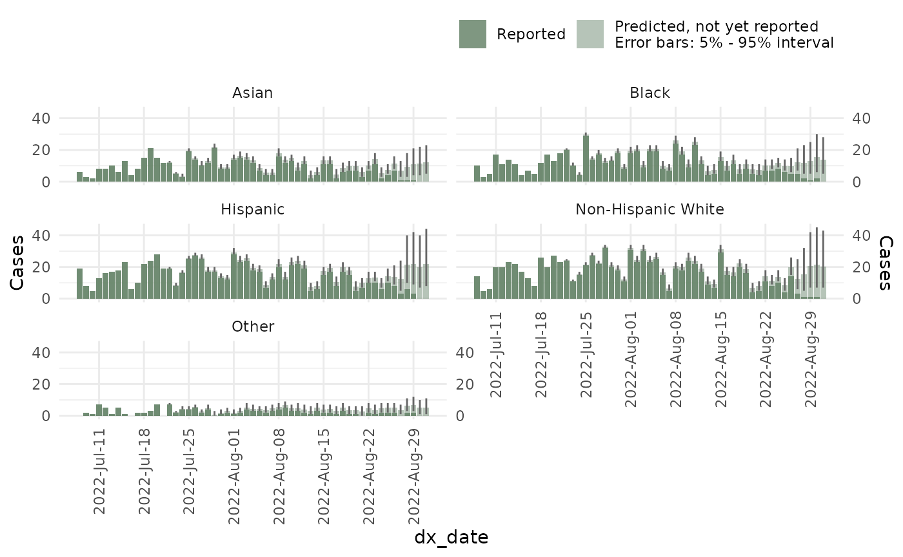

Advanced nowcast options
Advanced-nowcast-options.Rmd
set.seed(734586)
library(diseasenowcasting)
library(dplyr)This vignette will give you an overview of the advanced options in
the nowcast() function of the
diseasenowcasting package including the following:
- Using strata.
- Adding time covariates.
- Adding holidays.
- Adding cycles.
- Changing the autorregresive components.
- Changing the distribution.
- Obtain a sample from the prior.
- Changing the priors.
For this tutorial we will use the mpoxdat dataset
contained in the package.
data(mpoxdat)This contains date of diagnosis (dx_date), date of
report to the New York Health’s system (dx_report_date), a
simulated race covariate and the counts of observations in
that case n:
mpoxdat |> head()
#> # A tibble: 6 × 4
#> # Rowwise:
#> dx_date dx_report_date race n
#> <date> <date> <chr> <int>
#> 1 2022-07-08 2022-07-12 Asian 4
#> 2 2022-07-08 2022-07-12 Black 6
#> 3 2022-07-08 2022-07-12 Hispanic 6
#> 4 2022-07-08 2022-07-12 Non-Hispanic White 6
#> 5 2022-07-08 2022-07-13 Asian 2
#> 6 2022-07-08 2022-07-13 Black 3For the purpose of the example we will use the data until September 2022:
Using strata
A nowcast can be generated by stratified covariates specifying which
column (or columns) correspond to the strata. In our case
we can specify race to obtain a nowcast
stratified by race:
ncast_race <- nowcast(mpox_reduced, true_date = "dx_date",
report_date = "dx_report_date", strata = "race", refresh = 0)And subsequent operations including summary,
plots:
plot(ncast_race, datesbrakes = "1 week", rowsfacet = 3, casesbrakes = 3)
As well as backtesting:
#Backtesting for a random date in the past:
btest <- backtest(ncast_race, dates_to_test = as.Date("2022/08/04"), refresh = 0)and calculating metrics by the strata:
calc_wis(btest)
#> horizon Strata_unified model now
#> <num> <char> <char> <Date>
#> 1: 0 Asian model_2025-01-28_20h07m21s_198752210 2022-08-04
#> 2: 0 Black model_2025-01-28_20h07m21s_198752210 2022-08-04
#> 3: 0 Hispanic model_2025-01-28_20h07m21s_198752210 2022-08-04
#> 4: 0 Non-Hispanic White model_2025-01-28_20h07m21s_198752210 2022-08-04
#> 5: 0 Other model_2025-01-28_20h07m21s_198752210 2022-08-04
#> wis overprediction underprediction dispersion bias
#> <num> <num> <num> <num> <num>
#> 1: 2.914464 0.000000 1.1428571 1.771607 -0.5
#> 2: 2.671429 0.000000 0.1428571 2.528571 -0.5
#> 3: 4.653571 1.142857 0.0000000 3.510714 0.5
#> 4: 4.364286 1.000000 0.0000000 3.364286 0.5
#> 5: 7.250000 0.000000 6.1428571 1.107143 -0.9
#> interval_coverage_50 interval_coverage_90 ae_median
#> <num> <num> <num>
#> 1: 1 1 8
#> 2: 1 1 1
#> 3: 1 1 8
#> 4: 1 1 7
#> 5: 0 1 17